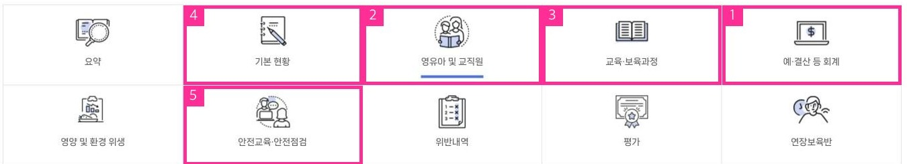

어린이집 대기 3곳,
AI로 이렇게 추렸어요
후보가 걸 수 있는 곳보다 많을 때, 어린이집 정보공개포털 자료를 AI로 나란히 놓고 보는 방법이에요. 좋은 곳을 골라주는 게 아니라, 어디가 다른지 보는 용도예요.
포털에서 볼 항목
어린이집 정보공개포털(info.childcare.go.kr) → 지역·이름 검색 → 어린이집 상세 창. 아래 메뉴 그림의 번호 순서예요.

메인 1세출 결산서 (1년 동안 쓴 돈)
예·결산 등 회계 → 세출 결산서 탭 → 회계년도 2025 → 조회
볼 곳 두 군데
- ① 인건비(선생님 월급 등)가 전체 중 얼마인지
- ② 보육활동비(급식·간식재료비, 교재교구비 등 아이에게 직접 쓰는 돈)
- 이름이 뭉뚱그려진 항목(예: 기타운영비)이 큰지도 보세요.
- 비중이 높고 낮음이 곧 좋고 나쁨은 아니에요. 국공립·민간·가정 어린이집은 구조가 달라요.
| 예시 (2025 결산) | 인건비 비중 | 보육활동비 비중 |
|---|---|---|
| ㄱㄴㄷ | 67.3% | 12.0% |
| ㄹㅁㅂ | 81.8% | 7.7% |
| ㅅㅇㅈ | 80.0% | 9.3% |
| ㅊㅌㅋ | 67.3% | 8.2% |
| ㅍㅎㄱ | 62.8% | 6.8% |
출처: 어린이집 정보공개포털, 5곳(영등포구), 2025년 결산, 조회일 2026-11-14.
메인 2교직원 (근속연수)
영유아 및 교직원 → 아래로 내려서 "보육교사의 현기관 근속연수" 표
- 1년 미만 선생님이 몇 명인지, 오래 일한 선생님이 몇 명인지 보세요. (매년 4월 기준)
- 위쪽 표의 급수(1·2급)는 자격 단계 표시예요. 정확한 기준을 끝까지 확인한 건 아니라서 조심스럽지만, "이런 구성이구나" 정도로 가볍게만 참고하세요.
메인 3특별활동
교육·보육과정 → 아래로 내려서 "특별활동" 표
"미운영"이라고 보육만 하는 건 아니에요. 외부 업체 없이 촉감놀이, 미술놀이처럼 자체로 하는 곳도 있어요. 방문 상담 때 여쭤보세요.
옵션 4기본 현황 (메뉴 4번)
보육실 개수, 조리실, 실내외 놀이터 여부와 면적. 면적은 아이 수에 따라 달라서 1명당 면적으로 보면 더 공평해요.
옵션 5안전교육·안전점검 (메뉴 5번)
보험 가입 현황, 소방·전기·놀이시설 점검일. 대부분 의무 보험은 가입돼 있어 차이가 거의 없어요.
AI에게 맡겨요
PDF로 저장해서 첨부해요. 포털은 버튼을 눌러야 내용이 뜨는 화면이라 링크만 주면 못 읽는 경우가 있어요.
PDF 저장 방법
- 위 메인 3개 화면을 하나씩 열어요.
- 화면 맨 아래 [인쇄] 버튼 (또는 Ctrl+P, 맥은 ⌘+P)
- 대상을 "PDF로 저장"으로 바꿔 저장
- 파일 이름은 알아보기 쉽게. 다른 어린이집도 똑같이 하고 모두 첨부해요.
기본 현황에는 원장님 성함이 보일 수 있어요. 비교에 필요 없으면 올리지 않아도 돼요.
* 내가 비교하고싶은 항목을 [ ] 안에 넣어서 분석 시켜 보세요
PDF 없이 어린이집 이름만 주면 포털에서 직접 읽어 와요.
* 내가 비교하고싶은 항목을 [ ] 안에 넣어서 분석 시켜 보세요
지역과 어린이집 이름(ㄱㄴㄷ, ㄹㅁㅂ, ㅅㅇㅈ)은 비교할 곳으로 바꿔 주세요. "순위·추천 금지"는 남겨 두세요.
AI가 읽은 숫자는 확인해요
- 옮긴 표부터 확인: 2~3개 숫자만 원래 화면과 맞춰 보세요.
- 합계 확인: "각 항목을 더하면 총합과 맞아?"라고 물어보세요.
이 방법으로는 선생님이 아이를 어떻게 대하는지, 분위기가 어떤지는 알 수 없어요. 방문 상담과 함께 보세요. 포털 자료는 어린이집이 직접 입력한 공시라, 입력 시점과 방식이 곳마다 달라요.